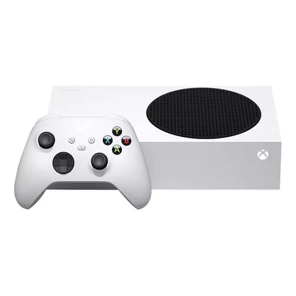

Consola Xbox Series S

RECOMENDADO
Consola Xbox Series S
Color: Blanco
Por Microsoft
$6.940
$5.399 22% OFF
en 15 meses sin intereses de $359,93
Llega gratis hoy
Descripción del producto
La Xbox Series S es la consola más pequeña y elegante de Microsoft hasta la fecha. Diseñada para ofrecer un rendimiento de próxima generación en un paquete compacto, esta consola es perfecta para los jugadores que buscan una experiencia de juego de alta calidad a un precio accesible.
Características principales:
- Resolución de hasta 1440p a 60 FPS, con capacidad de hasta 120 FPS
- Almacenamiento SSD personalizado de 512GB para tiempos de carga ultrarrápidos
- Compatible con miles de títulos de cuatro generaciones de Xbox
- Xbox Velocity Architecture, impulsada por un SSD personalizado
- Ray tracing para gráficos más realistas e inmersivos
- Diseño compacto y elegante que se adapta a cualquier configuración de entretenimiento
Especificaciones técnicas:
- CPU: 8 núcleos Zen 2 a 3.6 GHz
- GPU: 4 TFLOPS, 20 CUs a 1.565 GHz
- Memoria: 10GB GDDR6
- Resolución: 1440p con escalado 4K
- Soporte para DirectX Raytracing
- Reproducción de video en 4K y HDR